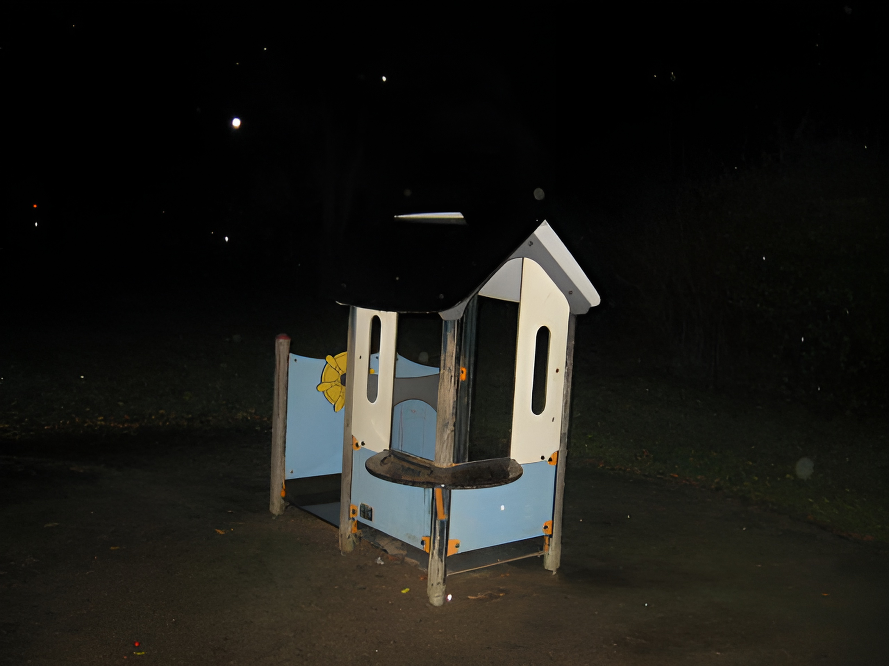

67.
Thus the power process is disrupted in our society through a deficiency of real goals and a deficiency of autonomy in the pursuit of goals. But it is also disrupted because of those human drives that fall into group 3: the drives that one cannot adequately satisfy no matter how much effort one makes. One of these drives is the need for security. Our lives depend on decisions made by other people; we have no control over these decisions and usually we do not even know the people who make them. (We live in a world in which relatively few people maybe 500 or 1,000 make the important decisions”Philip B. Heymann of Harvard Law School, quoted by Anthony Lewis, New York Times, April 21, 1995.) Our lives depend on whether safety standards at a nuclear power plant are properly maintained; on how much pesticide is allowed to get into our food or how much pollution into our air; on how skillful (or incompetent) our doctor is; whether we lose or get a job may depend on decisions made by government economists or corporation executives; and so forth. Most individuals are not in a position to secure themselves against these threats to more [than] a very limited extent. The individuals search for security is therefore frustrated, which leads to a sense of powerlessness.